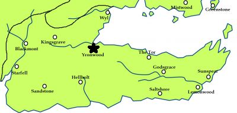

House Yronwood
(
Yronwood
)
House Yronwood
(
Yronwood
)
House Yronwood of Yronwood is the most powerful house in Dorne after the Martells. The Yronwoods were important kings in Dorne before the arrival of the Rhoynar; the head of the house continues to hold the title “The Bloodroyal”. They fought the Martells during Nymeria’s War and since then the two houses have been rivals for the control of Dorne. They joined Bittersteel against the Targaryens and Martells in three of the Blackfyre Rebellions, even though one the original goals of the rebels was to remove the Dornish influence at court. Yronwood Castle is the last fortress defending the Boneway; this is reflected in their title Warden of the Stone Way.” Their motto is We Guard the Way. Their blazon is a black portcullis grill over sand.
The known members of this house are:
Lord Anders Yronwood, Lord of Yronwood. Warden of the Stone Way. The Bloodroyal.
Ynys Yronwood, his eldest daughter and heir. Married to Ser Ryon Allyrion.
Ser Cletus Yronwood, his eldest son. Known for a lazy eye.
Gwyneth Yronwood, his youngest daughter.
Ser Archibald Yronwood, his cousin. Called “the Big Man” and known among the Windblown as “Greenguts
